也紀念我們永遠的朋友 李士傑先生（Shih-Chieh Ilya Li）。
自由教學軟體—PhET 科學模擬程式
對於學校的物理、化學、生物、地球科學等自然科學領域的課程來說，光靠課本的簡短描述，是很難讓沒有太多生活經驗的學生，了解那些看不到、摸不著的現象，此時較好的方式是使用譬喻的方式，利用學生已知的事物去解釋抽象的觀念，而更好的方式是讓這些看不見、摸不著的現象具體化，例如使用圖表、影片、動畫、模型等方式來解釋科學現象。
隨著網際網路的蓬勃發展，在網路上已經可以搜尋到許多有用的教學資源，例如可以在 YouTube 找到許多自然科學影片，或是在 Wiki – 維基百科搜尋各類的知識；同樣地，許多學校或是教育單位也針對課程內容，製作許多教學檔案提供學習者進一步參考。在本文中，特別要介紹對自然科學「教學者」或「學習者」都相當有助益的科學模擬程式 PhET (Physics Education Technology)。
PhET 是由美國科羅拉多大學 (University of Colorado, Boulder) 建置的網站，網站主要以物理實驗為主，其次還包含化學、生物、地球科學和數學等模擬程式，依據各模擬程式解說內容的不同，其適用對象可從國小學童到大學研究生不等。目前網站上已經提供八十餘個模擬程式，同時還有一些製作計畫陸續進行中，使用者可從首頁的 What's New 取得最新訊息。網頁相關內容雖然是以英文語言撰寫，但也提供各國語言版本的模擬程式可供線上執行 (Run now) 或下載 (Download) 使用，目前台灣在各學校網友的熱心協助下，已完成全部 87 個模擬程式的中文翻譯（目前翻譯進度全球第一），希望使用中文版本的使用者可至此找到所需的模擬程式。
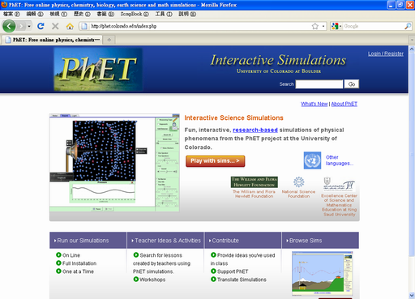
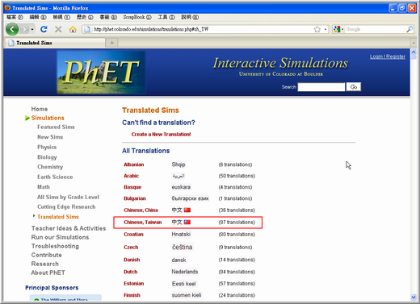
為了達成跨平台的特性，PhET 的模擬程式採用 Sun Microsystems' Java Web Start 及 Macromedia Flash 多媒體技術製作，因此不管是 Windows、Macintosh、Linux 等作業系統平台，只要預先安裝好相關的執行環境，即可使用瀏覽器順利地進行模擬程式的操作。Java 需要使用1.5版以上的虛擬機；Flash 需要使用第8版以上的播放器；如果還有其餘的使用問題可以參閱 PhET 的技術支援說明網頁。
PhET 的授權目前採用兩種方式，第一種：對於可執行的檔案（如 *.jar, *.jnlp, *.swf），採用 Creative Commons Attribution 3.0 United States License 授權（四個例外採用下一授權方式：Band Structure Simulation、Double Wells and Covalent Bonds Simulation、Quantum Bound States Simulation 及 Quantum Tunneling and Wave Packets Simulation）；第二種：對於原始程式碼及可執行檔則採用 Creative Commons GNU General Public License授權。因此，不論是採用哪一種授權方式，皆可讓第三方（如學生、教師、學區、博物館、出版商、銷售商等）自由地使用或再散佈網站上的模擬程式，非商業用途或商業用途的使用亦允許。更詳細的授權資訊請參閱此。
比起圖表或影片的單向訊息傳輸，PhET 模擬程式提供了互動功能，使用者可設定不同的參數進行測試，並觀察此條件下的反應結果，故學習者可在實驗前先進行預測，並以 PhET 印證預測與實驗結果是否相吻合。為了不讓使用者花費額外的時間在程式操作的學習上，PhET 採用直覺式的操作介面，並搭配許多仿真的科學測量儀器，以動畫及圖表等視覺化方式呈現抽象的科學概念。對於微觀或巨觀的觀察對象，反應速度太快或太慢的實驗，實驗器材昂貴或具危險性，實驗準備過程繁瑣且困難等問題，PhET 提供了一個易於使用且便宜的實驗環境，且因其屬於軟體公共使用授權，不會因繳不起軟體授權費就不得使用，更因其使用網頁瀏覽器作為執行平台，不論城、鄉學校或家中，不論使用時間早晚，只要連結上PhET 的網站即可點選使用。
在此以 PhET 網站下載率最高的電路組裝套件 (Circuit Construction Kit) 為例，以截圖方式說明 PhET 模擬程式的教學使用方式。
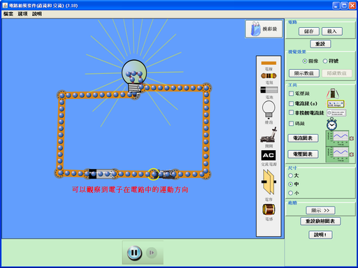
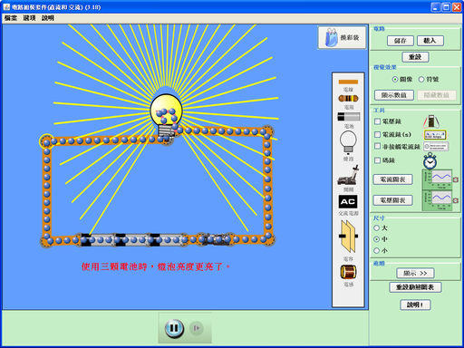
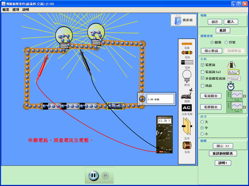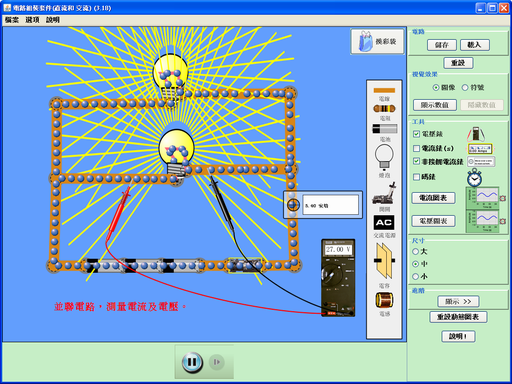
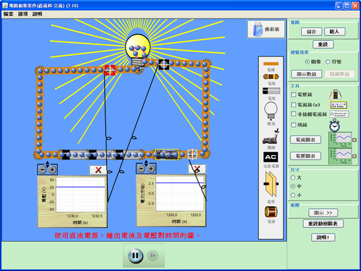
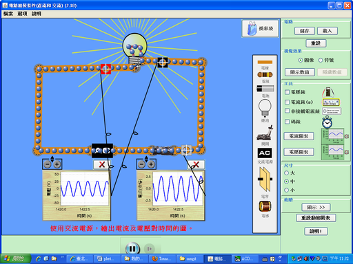
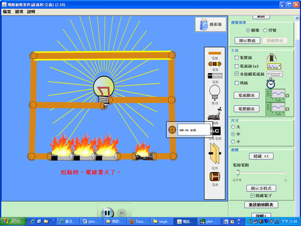
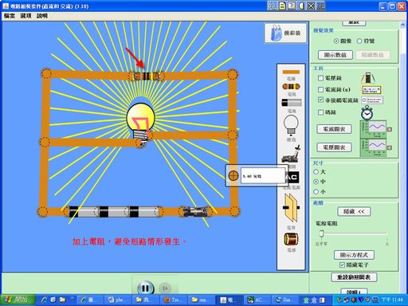
最後特別感謝中央研究院江易原博士將 PhET 介紹給國內教育單位，並感謝熱心網友（依筆畫順序）江易原、吳文宏、許伯任、張雯音、曾珮華、楊森吉、潘建宏、蔡凱如、謝祿適等人的協助將 PhET 相關內容中文化。教育部校園自由軟體應用諮詢中心 (OSSACC) 將 phET 收錄在EzGo7 光碟（可至此免費索取），方便學校教學及學生自學使用，同時也為 PhET 的使用者提供社群平台，歡迎各位同好在此討論與交流。
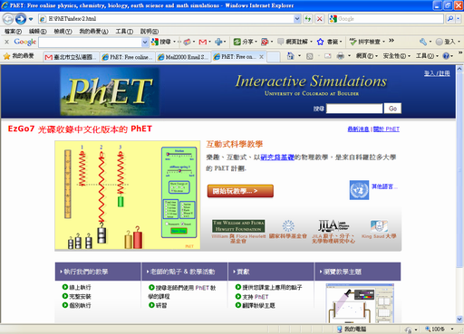
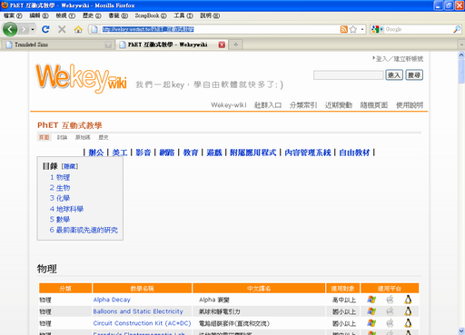
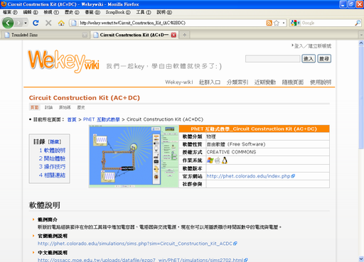
◎ 作者簡介
潘建宏老師，目前任職於弘道國中資訊組。
專欄總覽


E-Mail：contact@openfoundry.org Address：台北市南港區研究院路2段128號 中央研究院資訊科學研究所 . 隱私權條款. 使用條款